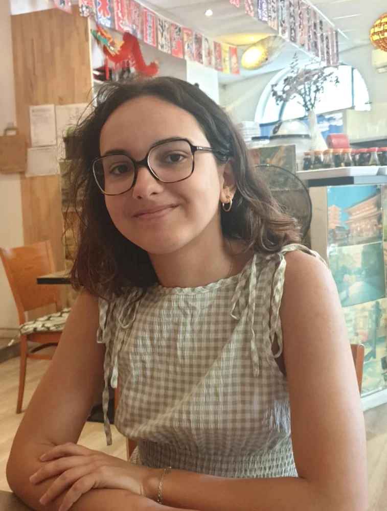
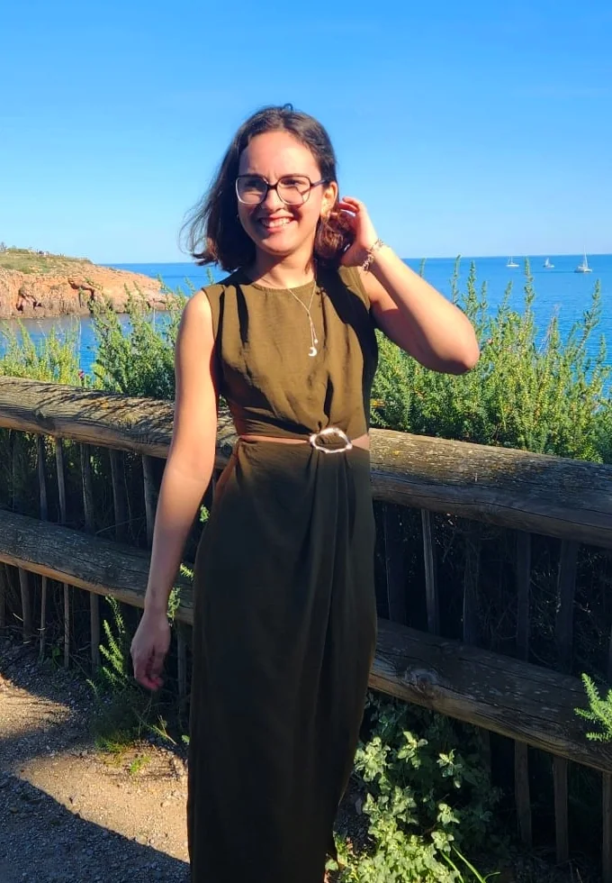

Bachelor Chef de Projet Digital · Montpellier Ynov Campus
Portfoliomarketing & communication
Moi, c'est Gabrielle.
Étudiante en 2ᵉ année de Bachelor Chef de Projet Digital à Montpellier Ynov Campus, je développe mes compétences en marketing, en communication et en gestion de projet.
J'ai choisi ce cursus parce qu'il nous apprend à toucher à tout, et c'est ce que vous verrez dans ce portfolio.
Curieuse, organisée et déterminée, j'aime transformer une idée en projet concret. Chaque projet me fait découvrir de nouvelles compétences, et c'est ce qui fait la richesse de mon profil : même quand je ne connais pas, j'essaie et je donne mon maximum, y compris en création.
Aujourd'hui, je cherche une alternance où mon travail aura un vrai impact : pour l'entreprise qui me fait confiance, et si possible pour le monde qui nous entoure.

Mes projets
Voici six projets que j'ai eu l'occasion de réaliser pendant ma formation.
Chacun représente une étape, avec ses défis, ses apprentissages et les compétences que j'y ai développées.
À chaque fois, j'ai cherché à concilier créativité, stratégie et expérience utilisateur, pour proposer des solutions pertinentes et porteuses de sens.
Survolez, glissez ou utilisez les flèches

Qui suis-je ?en trois traits
Curieuse & orientée solutions
Toujours à la recherche de nouvelles idées et de moyens d'améliorer l'expérience utilisateur.
Sur Ethikwear, j'ai fait tester la maquette du site et revu la navigation à partir des retours.
Créative & attentive aux détails
J'accorde une importance particulière à l'esthétique, à la cohérence visuelle et à la qualité des réalisations.
J'ai dessiné le logo d'Ethikwear de A à Z et conçu tout son site sur Figma.
Ambitieuse & en constante évolution
J'aime apprendre, relever de nouveaux défis et transformer mes idées en projets concrets.
De mon premier logo sur Illustrator à un repositionnement de marque mené seule, chaque projet m'a fait progresser.
Et si on travaillaitensemble ?
Vous cherchez une alternante qui aime autant organiser que créer ?
Je suis disponible au rythme de 2 jours à l'école et 3 jours chez vous.
J'habite à Montpellier, j'ai le permis et une voiture : je peux me déplacer en Occitanie.
Écrivez-moi, je réponds vite.